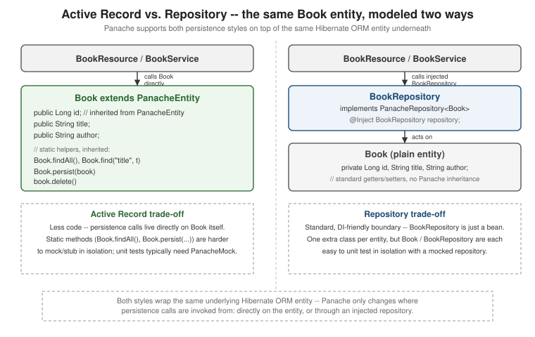

Panache: The Quarkus Data API
|
This content was generated with the assistance of AI and should be verified against the official documentation before being relied on in production. |
Panache is Quarkus’s layer on top of Hibernate ORM that removes most of the boilerplate a plain JPA entity
otherwise needs — no hand-written DAO, no repetitive EntityManager.persist/merge/createQuery calls for
routine operations, and a shortened query syntax for the common case. Panache does not replace Hibernate ORM; it
sits directly on top of it, generating code at build time around the same jakarta.persistence.*-annotated
entities. Hibernate ORM and JPA mapping themselves — entities, associations, fetching — are covered on
the Hibernate ORM and JPA page and are not re-documented here;
datasource setup and connection pooling are covered on
the datasources and transactions page. This page covers
Panache itself: the active-record and repository patterns, the simplified query API, where @Transactional
belongs, testing and mocking, and the generated REST/derived-query layers (REST Data with Panache and Quarkus
Data) built on top of it.
Extension setup
A project that persists entities through Panache pulls in hibernate-orm-panache plus a JDBC driver for the
target database:
./mvnw quarkus:add-extension -Dextensions=hibernate-orm-panache,jdbc-postgresqlwhich adds the following to pom.xml:
<dependency>
<groupId>io.quarkus</groupId>
<artifactId>quarkus-hibernate-orm-panache</artifactId>
</dependency>
<dependency>
<groupId>io.quarkus</groupId>
<artifactId>quarkus-jdbc-postgresql</artifactId>
</dependency>quarkus-hibernate-orm-panache transitively brings in quarkus-hibernate-orm, so no separate Hibernate ORM
extension needs to be added alongside it.
Active record vs. repository
Panache supports the same persistence operations through two different shapes, against the same underlying
Hibernate ORM entity. Both are shown below against one example entity, Book.
Active record: Book extends PanacheEntity
The active-record style makes the entity class itself the API: it extends PanacheEntityBase (or the
convenience subclass PanacheEntity, which additionally supplies an inherited Long id) and exposes its
persistent state as public fields rather than private fields with getters/setters:
package com.example.book;
import io.quarkus.hibernate.orm.panache.PanacheEntity;
import jakarta.persistence.Entity;
@Entity
public class Book extends PanacheEntity {
public String title;
public String author;
}Persistence operations are then static methods, inherited from PanacheEntity/PanacheEntityBase, called
directly on the entity class — or, for an already-loaded instance, as an inherited instance method such as
delete():
package com.example.book;
import java.util.List;
import jakarta.enterprise.context.ApplicationScoped;
import jakarta.transaction.Transactional;
@ApplicationScoped
public class BookService {
@Transactional
public Book createBook(String title, String author) {
Book book = new Book();
book.title = title;
book.author = author;
Book.persist(book);
return book;
}
public List<Book> allBooks() {
return Book.findAll().list();
}
@Transactional
public void deleteBook(Book book) {
book.delete();
}
}Only Long id needs to come from PanacheEntity; an entity that needs a different id type or generation
strategy extends PanacheEntityBase instead and declares its own @Id-annotated field, gaining every other
Panache static method the same way.
Repository: BookRepository implements PanacheRepository<Book>
The repository style keeps Book a plain entity — no Panache superclass, no public fields required — and
moves every persistence operation onto a separate repository class, injected via CDI wherever it is needed:
package com.example.book;
import jakarta.persistence.Entity;
import jakarta.persistence.GeneratedValue;
import jakarta.persistence.GenerationType;
import jakarta.persistence.Id;
@Entity
public class Book {
@Id
@GeneratedValue(strategy = GenerationType.IDENTITY)
public Long id;
public String title;
public String author;
}package com.example.book;
import io.quarkus.hibernate.orm.panache.PanacheRepository;
import jakarta.enterprise.context.ApplicationScoped;
@ApplicationScoped
public class BookRepository implements PanacheRepository<Book> {
}BookRepository needs no method bodies of its own — implementing PanacheRepository<Book> supplies every
operation shown below as an instance method, called on the injected repository rather than on the entity
class:
package com.example.book;
import java.util.List;
import jakarta.enterprise.context.ApplicationScoped;
import jakarta.inject.Inject;
import jakarta.transaction.Transactional;
@ApplicationScoped
public class BookService {
@Inject
BookRepository repository;
@Transactional
public Book createBook(String title, String author) {
Book book = new Book();
book.title = title;
book.author = author;
repository.persist(book);
return book;
}
public List<Book> allBooks() {
return repository.listAll();
}
@Transactional
public void deleteBook(Book book) {
repository.delete(book);
}
}
Both classes compile against the same jakarta.persistence.Entity; Panache’s build-time bytecode enhancer
(the "Panache Entity Enhancer") rewrites an active-record entity’s public fields into private fields with
generated getters/setters during augmentation, so a JSON serializer, a Bean Validation constraint annotation, or
any other code that expects conventional JavaBean accessors sees exactly that — the public-field source form is
a compile-time convenience, not the actual runtime shape of the class.
Simplified queries
The examples below are shown on both forms — the active-record static form and the repository instance-method
form — since the query API itself is identical either way, only the receiver differs (Book. vs.
repository.).
Shortened HQL and named parameters
A single field name plus a value shortcuts an equality check; a partial HQL expression with positional (?1,
?2, …) or named parameters covers everything else:
package com.example.book;
import java.util.List;
import io.quarkus.panache.common.Parameters;
public class BookQueries {
public List<Book> byTitle(String title) {
return Book.list("title", title);
}
public List<Book> byTitleAndAuthor(String title, String author) {
return Book.list("title = ?1 and author = ?2", title, author);
}
public List<Book> byTitleAndAuthorNamed(String title, String author) {
return Book.list("title = :title and author = :author",
Parameters.with("title", title).and("author", author));
}
}package com.example.book;
import java.util.List;
import io.quarkus.panache.common.Parameters;
import jakarta.enterprise.context.ApplicationScoped;
import jakarta.inject.Inject;
@ApplicationScoped
public class BookQueryService {
@Inject
BookRepository repository;
public List<Book> byTitle(String title) {
return repository.list("title", title);
}
public List<Book> byTitleAndAuthorNamed(String title, String author) {
return repository.list("title = :title and author = :author",
Parameters.with("title", title).and("author", author));
}
}Listing, streaming, counting, and deleting
list(…) returns a java.util.List, stream(…) a lazily-consumed java.util.stream.Stream, and both
accept the same shortened-HQL/parameter overloads as above; count(…) and delete(…) accept an optional
query too, defaulting to the whole table when called with no arguments (listAll(), Book.deleteAll()):
package com.example.book;
import java.util.List;
import java.util.stream.Stream;
public class BookOperations {
public List<Book> all() {
return Book.listAll();
}
public Stream<Book> streamByAuthor(String author) {
return Book.stream("author", author);
}
public long countByAuthor(String author) {
return Book.count("author", author);
}
public long deleteByAuthor(String author) {
return Book.delete("author", author);
}
public Book firstByTitle(String title) {
return Book.find("title", title).firstResult();
}
}package com.example.book;
import java.util.List;
import java.util.stream.Stream;
import jakarta.enterprise.context.ApplicationScoped;
import jakarta.inject.Inject;
@ApplicationScoped
public class BookRepositoryOperations {
@Inject
BookRepository repository;
public List<Book> all() {
return repository.listAll();
}
public Stream<Book> streamByAuthor(String author) {
return repository.stream("author", author);
}
public long countByAuthor(String author) {
return repository.count("author", author);
}
public long deleteByAuthor(String author) {
return repository.delete("author", author);
}
public Book firstByTitle(String title) {
return repository.find("title", title).firstResult();
}
}find(…) returns a io.quarkus.hibernate.orm.panache.PanacheQuery<Book> (or PanacheQuery<Book> from the
repository), which list(), stream(), firstResult(), and singleResult() all resolve — and which is also
where pagination, sorting, and projection (below) are applied before resolving it.
Pagination and range queries
.page(Page.of(pageIndex, pageSize)) restricts a PanacheQuery to one page; pageCount() reports the total
number of pages for the same query, and nextPage() returns a new PanacheQuery advanced by one page. .range(
start, end) is the lower-level alternative — an inclusive, zero-based row range, with no separate page-count
concept:
package com.example.book;
import java.util.List;
import io.quarkus.hibernate.orm.panache.PanacheQuery;
import io.quarkus.panache.common.Page;
public class BookPaging {
public List<Book> secondPageByAuthor(String author) {
return Book.find("author", author)
.page(Page.of(1, 20))
.list();
}
public List<Book> pageAfterTheFirst(String author) {
PanacheQuery<Book> query = Book.find("author", author).page(Page.ofSize(20));
int totalPages = query.pageCount();
return totalPages > 1 ? query.nextPage().list() : List.of();
}
public List<Book> firstTenById() {
return Book.findAll().range(0, 9).list();
}
}package com.example.book;
import java.util.List;
import io.quarkus.panache.common.Page;
import jakarta.enterprise.context.ApplicationScoped;
import jakarta.inject.Inject;
@ApplicationScoped
public class BookRepositoryPaging {
@Inject
BookRepository repository;
public List<Book> secondPageByAuthor(String author) {
return repository.find("author", author)
.page(Page.of(1, 20))
.list();
}
public List<Book> firstTenById() {
return repository.findAll().range(0, 9).list();
}
}Sorting
io.quarkus.panache.common.Sort builds an ordering that can be passed alongside a query, either as a standalone
argument or chained with .and(…) for a multi-column order; Sort.descending(…) is shorthand for a single
descending column:
package com.example.book;
import java.util.List;
import io.quarkus.panache.common.Sort;
public class BookSorting {
public List<Book> byAuthorAscending(String author) {
return Book.list("author", Sort.by("title"), author);
}
public List<Book> allByAuthorThenTitleDescending() {
Sort sort = Sort.by("author").and("title", Sort.Direction.Descending);
return Book.listAll(sort);
}
public List<Book> allNewestFirst() {
return Book.listAll(Sort.descending("id"));
}
}package com.example.book;
import java.util.List;
import io.quarkus.panache.common.Sort;
import jakarta.enterprise.context.ApplicationScoped;
import jakarta.inject.Inject;
@ApplicationScoped
public class BookRepositorySorting {
@Inject
BookRepository repository;
public List<Book> allByAuthorThenTitleDescending() {
Sort sort = Sort.by("author").and("title", Sort.Direction.Descending);
return repository.listAll(sort);
}
}Projections
.project(SomeDtoClass.class) narrows a query to a JPQL constructor expression that selects only the columns
the DTO’s constructor declares, instead of loading the whole entity:
package com.example.book;
public class BookSummary {
public final String title;
public final String author;
public BookSummary(String title, String author) {
this.title = title;
this.author = author;
}
}package com.example.book;
import java.util.List;
public class BookProjections {
public List<BookSummary> summaries() {
return Book.findAll().project(BookSummary.class).list();
}
}package com.example.book;
import java.util.List;
import jakarta.enterprise.context.ApplicationScoped;
import jakarta.inject.Inject;
@ApplicationScoped
public class BookRepositoryProjections {
@Inject
BookRepository repository;
public List<BookSummary> summaries() {
return repository.findAll().project(BookSummary.class).list();
}
}The DTO’s constructor parameter names (or, failing that, declaration order) drive which entity fields are selected; a projection with fewer columns than the full entity is materially cheaper for a list endpoint that only needs a summary view.
@Transactional placement, custom queries, and testing
Where @Transactional belongs
jakarta.transaction.Transactional belongs on the calling service or resource method — as in every example
above — never on the entity or repository itself: a write method with no active transaction fails at runtime,
and Panache has no mechanism of its own to start one on an entity’s or repository’s behalf. @Transactional
itself — propagation, rollback rules, transaction boundaries — is not re-documented here; see
the datasources and transactions page for that.
Dropping to the EntityManager
A query Panache’s shortcuts do not cover — a native SQL statement, a JPA Criteria query, fine-grained flush or
lock-mode control — reaches the same underlying jakarta.persistence.EntityManager Panache itself uses, either
by injecting it directly or by calling getEntityManager() on the entity or repository:
package com.example.book;
import java.util.List;
import jakarta.enterprise.context.ApplicationScoped;
import jakarta.inject.Inject;
import jakarta.persistence.EntityManager;
@ApplicationScoped
public class BookNativeQueries {
@Inject
EntityManager entityManager;
public List<Book> byTitleContaining(String keyword) {
return entityManager.createQuery(
"select b from Book b where lower(b.title) like lower(concat('%', :kw, '%'))", Book.class)
.setParameter("kw", keyword)
.getResultList();
}
}Book.getEntityManager() (active record) and repository.getEntityManager() (repository) return the identical
injected EntityManager, so either style can drop down to it without adding a separate injection point.
Testing
A @QuarkusTest runs against a real, injected BookRepository (or the active-record Book class) backed by the
configured datasource — typically a Dev Services container in tests, as covered on
the datasources and transactions page:
package com.example.book;
import static org.assertj.core.api.Assertions.assertThat;
import io.quarkus.test.junit.QuarkusTest;
import jakarta.inject.Inject;
import jakarta.transaction.Transactional;
import org.junit.jupiter.api.Test;
@QuarkusTest
class BookRepositoryTest {
@Inject
BookRepository repository;
@Test
@Transactional
void persistsAndFindsABook() {
Book book = new Book();
book.title = "1984";
book.author = "George Orwell";
repository.persist(book);
assertThat(repository.findById(book.id)).isNotNull();
}
}Unit-testing a service that calls the repository is the ordinary CDI mocking story:
io.quarkus.test.junit.mockito.InjectMock replaces the injected BookRepository bean with a Mockito mock, the
same way it would for any other CDI bean:
package com.example.book;
import static org.assertj.core.api.Assertions.assertThat;
import static org.mockito.Mockito.when;
import java.util.List;
import io.quarkus.test.junit.QuarkusTest;
import io.quarkus.test.junit.mockito.InjectMock;
import jakarta.inject.Inject;
import org.junit.jupiter.api.Test;
@QuarkusTest
class BookServiceWithRepositoryTest {
@InjectMock
BookRepository repository;
@Inject
BookService bookService;
@Test
void listsAllBooksThroughTheMockedRepository() {
Book book = new Book();
book.title = "1984";
when(repository.listAll()).thenReturn(List.of(book));
List<Book> books = bookService.allBooks();
assertThat(books).containsExactly(book);
}
}Unit-testing a service built on the active-record style needs io.quarkus.panache.mock.PanacheMock instead,
since Book.listAll() is a static method and Mockito cannot mock a static call on an ordinary injected bean:
PanacheMock.mock(Book.class) bytecode-swaps `Book’s static methods for the duration of the test so they can be
stubbed and verified with ordinary Mockito syntax:
package com.example.book;
import static org.assertj.core.api.Assertions.assertThat;
import static org.mockito.Mockito.when;
import java.util.List;
import io.quarkus.panache.mock.PanacheMock;
import io.quarkus.test.junit.QuarkusTest;
import org.junit.jupiter.api.BeforeEach;
import org.junit.jupiter.api.Test;
@QuarkusTest
class BookServiceTest {
@BeforeEach
void mockBookStatics() {
PanacheMock.mock(Book.class);
}
@Test
void listsAllBooksThroughTheMockedStatics() {
Book book = new Book();
book.title = "1984";
when(Book.listAll()).thenReturn(List.of(book));
List<Book> books = Book.listAll();
assertThat(books).containsExactly(book);
}
}Known trade-offs
-
Static-method testability friction on active record. Mocking
Book’s static methods needs `PanacheMockspecifically; a repository is just another injectable CDI bean, so@InjectMock— the same mechanism used to mock anything else in a Quarkus test — is enough, with no Panache-specific test API involved. -
Public fields are a deliberate trade-off, not an oversight. Panache favors the reduced boilerplate of public fields over classic private-field-plus-accessor encapsulation; a codebase that needs stricter encapsulation on a given entity can still hand-write private fields and accessors on either pattern, at the cost of losing that conciseness.
-
N+1 queries are the same risk under both patterns. Active record and repository both sit on the same Hibernate ORM entity and the same lazy-loading defaults for associations, so neither pattern is more or less exposed to the N+1 problem than the other; the Hibernate ORM section covers the general fix patterns (fetch joins,
@BatchSize, and so on) that apply equally regardless of which Panache style is in use.
REST Data with Panache and Quarkus Data
REST Data with Panache (the quarkus-hibernate-orm-rest-data-panache extension, guide at
https://quarkus.io/guides/rest-data-panache/) generates a complete CRUD REST resource at build time from a bare
interface declaration — no hand-written resource class at all — for the common case of an entity that needs
straightforward list/get/create/update/delete endpoints with no extra business logic:
package com.example.book;
import io.quarkus.hibernate.orm.rest.data.panache.PanacheEntityResource;
public interface BookResource extends PanacheEntityResource<Book, Long> {
}The repository-style equivalent is PanacheRepositoryResource, generated against a repository instead of an
active-record entity:
package com.example.book;
import io.quarkus.hibernate.orm.rest.data.panache.PanacheRepositoryResource;
public interface BookRepositoryResource extends PanacheRepositoryResource<BookRepository, Book, Long> {
}Either interface is enough on its own to expose GET /book, GET /book/{id}, POST /book, PUT /book/{id},
and DELETE /book/{id}; a resource that needs any endpoint beyond that CRUD set, or any logic before/after a
persistence call, still needs a hand-written @Path resource (covered on
the Quarkus REST page) instead.
Quarkus Data (guide at https://quarkus.io/guides/quarkus-data-hibernate/) is a newer, complementary approach to
the same general problem of reducing repository boilerplate, closer in spirit to Spring Data JPA: it generates a
repository implementation at build time from an interface whose method names are derived queries — the method
name itself (e.g. a method meaning "find books by author") is parsed to build the underlying query, rather than
a shortened-HQL string being written by hand. Where Panache is class-based — an entity extending
PanacheEntity/PanacheEntityBase, or a repository class explicitly implementing PanacheRepository<T> — Quarkus Data is interface-only, with no active-record superclass and no explicit repository class to write.
Given how new this guide is relative to the rest of Hibernate ORM with Panache, treat it as an evolving,
complementary option to evaluate for a new derived-query-heavy repository rather than a documented like-for-like
replacement for Panache — consult the official guide directly for its exact current annotations and supported
method-name vocabulary before adopting it.
The decision tree below picks among all four options covered on this page: